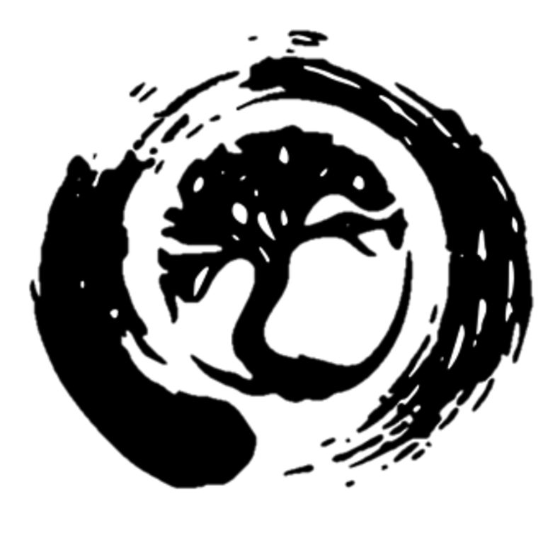

Project

When a bird sings, it doesn't sing for the advancement of music.
But if somebody stops to listen and is delighted, that's fine.
- Alan Watts
The Medusa Project
Guardian & Hero Nation was founded in (2018) as a spinoff of Zenratstudios (2015) and it's One Million Heroes campaign. Zenratstudios in turn was an attempt to generate revenue to create the Book and Game series that had been in development since (2005). Today Guardian & Hero Nation is a monastery that develops Art (Books, Games, Comic which share a universe) and designs self-sustaining monastic communities built with the intent of supporting it's members in a way that aligns with our philosophy that our life and work be a byproduct of our healing. Many people ask who the Guardians and Heroes are and what we practice. It's not so important who we are, but *what* we create. Our primary philosophy is to heal and let our life be a byproduct of our healing, to build positive communities for our children to grow up, and to create art that grants some insight into the human condition and a souls ability to heal. It is broken into two categories:
I.
WorldBuilding
The Medusa project, began as a book and interactive novel written in 2006. Over 17 years as of 2023 it has grown into a series, with a developed lore, characters and universe. The project has gone through several different demos and iterations, but the main constant has been the world, characters and story which has only grown more refined with time. This year as of Nov. 2022 is the first year the project has become refined enough to share with others interested in it's journey.
Books The books form the foundation of the Medusa Project's lore.
Games Games centered around the Medusa universe.
Graphic Novels Versions of the book which exist in graphic novel format.
Environment Design Environment Concept Art
Wikis The Encyclopedias for the lore.
II.
Guardian & Hero Nation
Guardian & Hero Nation is a startup Monastery for guardian monks and layman who share the same spiritual lineage. The seeds of it began from the same seeds that birthed the Medusa Project, and arose from a desire to build a world that lived beyond the pages of a story. The Monastery is our headquarters, our home and studio the place (or places) where all the work for this project gets done. It is our culture, our lifestyle and more. Overtime the monastery will grow and become refined. The philosophies, beliefs and practices aren't as important as what we create. This website will focus primarily on that and any philosophies that we hold will be hosted and shared elsewhere. Here we will share architectural, community village, and other designs, perhaps share behind the scenes. But we will keep our monastic life (our home life) separate.
III.
Solo Developer
This entire project is commandered by an artist codenamed, The Nameless One.
Though it is hope that someday the seeds planted will grow into a self-sustaining community tomorrow. This website is a place where art, dreams, visions and projects are placed, where anyone if they choose can watch how it unfolds. If people happen upon it and find some enjoyment from it's creations that is alright, and if others find that it is not for them, equally fine.